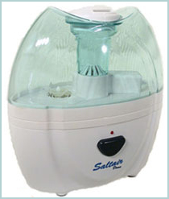

Ultrasonic Salinizer - Saltair Domo® - (Patent Pending PCT 053223)

The Ultrasonic Salinizer is an ultrasonic particles dispenser that makes use of ultrasonic frequency vibration technology to transform the saline solution into under 5 micron salt particles, to freely breathe the salt aerosol from the indoor air. The device is not a humidifier, as is placing an insignificant amount of humidity into the indoor air.
These breathable salt particles are able to penetrate deep into the lungs, up to the alveoli, helping in cleaning the mucus, killing bacteria, reducing inflammation and humidifying the whole respiratory tract. The salt aerosols have very good effect in cleaning the indoor air as well, due to the bactericide property of salt and the highly concentration of negative ions of salt that stick to the positively charged particles of dust, bacteria and viruses.
The device comes with a traveler electric adaptor, instruction manual, cleaning kit and a
free 3 months supply of natural rock salt for the saline solution. However, we advice you to save from the shipping cost of the salt supply and order extra salt from the store. The device is easy to use, just plug-in and use it over the night. No mask on the face, no mouth piece mounted, no inconvenience, just freely breathe. One device is adequate for the treatment of max. 150 cubic meters room.(about 450 sqft). However, we recommend to place the ultrasonic salinizer Saltair Domo close to your bed during night and enjoy the wonderful effect of a natural therapy. The device is very silent, almost noise free.
For best results, please use the device every night because salt therapy has cumulative effects in time. The longer you use it, the better you will feel! The ultrasonic salinizer Saltair Domo uses only Middle Miocene Era mineral halite salt crystals from the famous Transylvanian Praid salt mine, unprocessed and untreated with chemicals (98% NaCl, 0.5% calcium chloride and magnesium, 0.2 iodine and sulfur). Please find it in our online store!
*** The device does not produce any environmental corrosion effects.
Price (includes salt supply for 4 months): $ 125 (+13% HST)
The salt therapy can be used with very good results in all chronic respiratory diseases as well as preventive in healthy people. In chronic diseases it helps with inflammation, unclog the blockages, cleaning the respiratory system and eases breathing. It also prevents the respiratory diseases, protecting against colds and flu by maintaining a good hygiene and strengthening the immunity of the respiratory mucosa against allergens.
It is a very safe therapy for all people and ages, including infants and pregnant women, and does not interact with any salt free diet or medication. The device can also be used for the respiratory problems in pets.
| 1 Hour Treatment | $35 |
| Series of 5 | $30 |
Frequently Asked Questions
How is the ultrasonic salinizer Saltair working?
Can the ultrasonic salinizer be compared with a humidifier / humidifying rate?
How ultrasonic salinizer differs from the Salin Plus device?
How many square feet will it covers?
Does Saltair need special care?
Will the saline solution build up mold or fungi?
Is it quiet?
What is its size?
Does it do negative ionization?
Will Saltair device interact with other medication or low-salt diet?
Will the other air cleaners remove the salt that Saltair places into the air?
How the device helps in a better sleep?
Is the device recommended also for healthy people?
Can the Salt Pipe inhaler be used in place of the Saltair device or would I need both?
How the device helps in snoring?
Is the device safe in infants and small children?
How it helps in ear infection?
How long does it take to notice a difference?
Are there any special specification?
Can pets benefit of this therapy?
Q: How Saltair device is working ?
A: Saltair device is an ultrasonic salinizer that places micro crystals of salt, under 5 microns with a majority of micro particles under 1 micron, into the indoor air for long time inhalation. The salt micro particles are able to penetrate deep into your lung and clean, humidify, absorb inflammation and widen all the airways based on the fact that the natural salt has mucokinetic (fluidizes the mucus), anti inflammatory (absorbs edema from the mucosa lining the airways), anti bactericide(kills bacteria) and hydrophilic properties (absorbs edema and humidifies the airways).
Q: Can the ultrasonic salinizer be compared with a humidifier / humidifying rate?
A: Absolutely no! The main role of the ultrasonic salinizer is to place breathable micro particles of salt into the indoor air, for long time inhalation by normal breathing. The quantity of humidity that is placed into the indoor air is insignificant and you should expect the saline solution tank to fully empty in 8-9 nights of continuos use.
Q: How ultrasonic salinizer differs from the Salin Plus device?
A: Both devices place tiny micro-particles of salt, under 5 microns, into the indoor air for easy breathing. While Salin is using dry salt filter, the ultrasonic salinizer uses saline solution to create salt aerosol. With the Saltair, the quantity of salt particles placed into the air can be easily adjusted and controlled by increasing the saline solution concentration.
Q: How many square feet it covers?
A: One device is adequate for the treatment of max. 150 cubic meters room.(about 450 sqft). However, it is recommended to use it close to your bed while sleeping.
Q: Does Saltair device need special care?
A: The device needs regular maintenance every few months by gently cleaning the ultrasonic cell with the provided cleaning solution. However, regarding the saline solution it should be replaced and the device gently cleaned with tap water every 7-8 days.
Q: Will the saline solution build up mold or fungi?
A: No! The saline solution will not build any fungi or mold due to the specific salt properties. However we advice to clean the device with plain water or change the saline solution every 7-8 days.
Q: Is it quiet?
A: The device is almost noise free. You barely can hear that it is working.
Q: What is its size?
A: 200 x 180 x 90 mm ( ~8 x 7 x 3.5 inches) and weights maximum 0.55 kg or 1.2 lb.
Q: Does it do negative ionization?
A: The dry sodium chloride (salt) aerosol has a considerable level of negative charge of the particles and this is leading to a negative ionization of the air surrounding the salt ions. Also, the inner surfaces of airways have a slight positive charge. Negatively charged particles of salt aerosol move in the lumen of respiratory tract and settle more intensively compared to neutral particles. In addition, the negative charge increases aerosol stability.
Q: Will Saltair device interact with other medication or low-salt diet?
A: No! The device can be a complementary or stand alone (alternative) treatment and does not interact with any classical treatment. The quantity of the salt into the air is comparable with the ocean or seaside aerosol and will not affect a low-salt diet. The salt micro particles reach the epithelium surface of the respiratory system and are eliminated with the mucus.
Q: Will the other air cleaners take the salt out of the air that the Saltair device places in the indoor air?
A: Even if the majority of salt micro particles are under 2 micron, some filters as HEPA can remove the salt micro particles from air. However, it is recommended that the device should be used at least 8 hours a day, and preferable during the night and to be ~25-30 inches from the patient, preferable at the same level (e.g. using a night table), and the air flows towards him. Using these directions you'll be able to benefit of the salty air even if you use other air cleaners in the house.
Q: How the device helps in a better sleep?
A: Many people have noticed that they sleep better when using salt therapy. This is because it helps in cleaning and widening all the airways, leading instead to an easier breathing and proper amount of oxygen in your blood, so better blood oxygenation. Salt was also found to have good effect over the nervous system.
Q: Is the device recommended also for healthy people?
A: Yes! Because of its general healthy and hygiene effects, the Saltair device is recommended not only for people suffering from respiratory problems, but also for healthy people to increase the immunity of the respiratory system.
The device affects the flow of secretions of the respiratory passages and strengthens the vibrations of cilia, allowing the secretions to be removed quickly and respiratory passages to be cleared, bringing an easier and comfortable breathing pattern. It also helps in clearing the nasal passages, diminishes the snoring and obtain a more relaxed and therapeutic sleep.
Q: Can the Salt Pipe inhaler be used in place of the Saltair device or would I need both?
A: Depending on your condition, you can use one or both of them. However it is recommended to get as much exposure of the salt therapy as you can. The ultrasonic salinizer has to be plug-in and can be used during the night and have a long time exposure as you sleep, and the Salt Pipe is handy and small and could be used when you travel and are outside of your home. They are complementary products and can be used together to maximize the exposure to the salt therapy. In chronic disease you need at least 7-8 hours exposure of salt therapy.
Q: How the device helps in snoring?
A:Many snorers have been noticed that they don't snore as loud as before or they stop snoring. The salt ions reduce the oro-pharyngeal and soft palate edema, often met with snoring, resulting in improvement and diminishing of snoring. The salt aerosol also clears the mucus and unclog blockages that also cause snoring.
Q: Is the device safe in infants and small children?
A: Yes! It is very safe! Fighting with flu and colds in infants and small children could give you a hard time. Salt therapy devices are a real help in opening and clearing the airways and get ride of stuffy nose and wake-ups during the night. A regular use of the device will increase the resistance to flu and cold and will provide a faster recovery after an episode.
Q: How it helps in ear infection?
A: In infants and small children, ear infection could appear very often. To help them to get better sooner and reduce the rate of recurrence, you should place their bed under an angle (the head should stay upper then feet) and place the device close to the bed with the air stream towards them. The salt aerosol helps with the edema of the Eustachian tube mucosa, leading to widening of the airway passages and better drainage of the inflammatory secretions & better aeration behind the tympanic membrane (drum). The fact the inhaled saline has bactericide and bacteriostatic properties also helps.
Q: How long does it take to notice a difference?
A: This is depending on your condition but you should notice soon the fresh and easy breathing air. At the same time, it is likely that there will be other noticeable and beneficial effects such as a reduction or cessation in the use of asthma inhalers. Any current medical problems, however must be given special attention. You should notice a difference in 2-3 weeks of intensive use. Soon, for many snorers it was noticed that they don't snore as loud as before or stop snoring. All natural therapies takes some time and perseverance but with aerosol salt therapy many people got impressive results. Is not something that you should use it once and be cured. You should use it intensively at least in the first month, day by day, and as long as you can. The more exposure, the more benefits you get.
Q: Are there any special specification?
A: Sometimes, in the first period of utilization, it is possible an accentuation of the coughing phenomenon, especially with larger than the recommended dose of salt in the saline solution. The fluidization of the secretion in the respiratory system leads to the elimination of these secretions. Coughing has an important part in this mechanism. If the coughing strokes give you too much trouble you can adjust the quantity of salt into the saline solution by making another one using less salt. REMEMBER that coughing, in this case, is not something to alarm for, unless it is too intense. You should then decrease the quantity of the salt and slowly increase it again in time as your body gets accustomed with the salt therapy.
Q: Can pets benefit of this therapy?
A: Yes! Thinking now about pets, they are part of our life, day and night, including their problems. A dog / cat snoring or asthma-allergy pattern is very much the same as ours and looking for a solution is not a problem anymore, as the salt aerosol will work great also for them. |